 OUR STORY
OUR STORY
I started my first coffee shop in 2004 in Hampstead Garden Suburbs after deciding to give up my 9 to 5 job in the city. With no catering experience, the only way I knew how to operate a business was NOT to look at it as a business. I treated it like my home and all the customers were guests in my home.
After 13 years, I still stand by the same principle as I have not yet learnt the art of the business but have mastered the art of being a host. We buy the best fresh ingredients and cook the food I serve to my family at home. Everything is freshly cooked on site and served immediately to our guests.